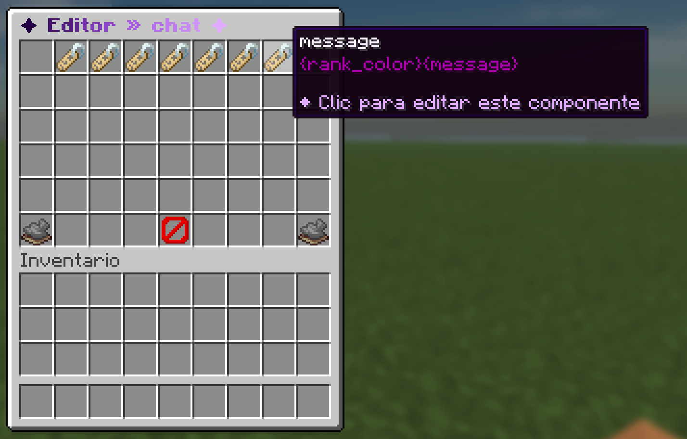

Esta guía te acompaña en tu primer cambio del chat. Vas a editar un archivo, recargar y ver el resultado en el juego. No necesitas experiencia previa.

Cómo se construye una línea de chat
Una línea de chat está hecha de piezas pequeñas llamadas partes, que se muestran en orden. El formato de fábrica tiene estas:
| Parte | Qué enseña |
|---|---|
delete |
Un pequeño [x] que solo ve el staff, para borrar el mensaje. |
prefix |
La etiqueta del rango del jugador, por ejemplo [VIP]. |
party |
El nombre de la party, solo si el jugador está en una. |
player-name |
El nombre (o apodo) del jugador, con la tarjeta al pasar el ratón. |
suffix |
El sufijo del rango, si tiene. |
separator |
El » entre el nombre y el mensaje. |
message |
Lo que escribió el jugador. |
Todas están en un único archivo: plugins/Chatalyst/formats/chat.yml.
Paso 1: cambia el separador
Abre plugins/Chatalyst/formats/chat.yml y busca la parte separator:
separator:
Message: " <#7B68A0>» <reset>"Cambia el » por dos puntos:
separator:
Message: "<#7B68A0>: <reset>"El texto usa MiniMessage: <#7B68A0> es un color, <bold> pone el texto en negrita y <reset> quita el estilo. Los códigos antiguos con &, como &7, también funcionan.
Paso 2: recarga y mira
Guarda el archivo y ejecuta, en el juego o en la consola:
/cht reloadEscribe algo en el chat. El separador nuevo aparece al momento. Si algo se ve mal, ejecuta /cht doctor para encontrar el error.
Paso 3: colorea el mensaje
La parte message decide el color de lo que escriben los jugadores. De fábrica usa el color del rango:
message:
Message: "{rank_color}{message}"Para que todos los mensajes salgan en blanco, escribe tú el color:
message:
Message: "<white>{message}"{message} es un placeholder: Chatalyst lo cambia por el texto real. En Placeholders están todos.
Paso 4: edita la tarjeta del nombre
Al pasar el ratón por un nombre sale una tarjeta con rango, party, dinero, tiempo jugado y ping. Es la lista Hover de la parte player-name. Cada línea de la lista es una línea de la tarjeta:
Hover:
- " {rank_color}✦ <bold>{rank_nick}</bold>"
- " {rank_gradient}<strikethrough> </strikethrough></gradient>"
- " "
- " <#C0B3D9>{$rank} <#7B68A0>» {player_prefix}<reset>"
- " <#C0B3D9>{$party} <#7B68A0>» <#FBF2FF>{party}"
- " <#C0B3D9>{$money} <#7B68A0>» <#3DFFA8>{balance}"
- " <#C0B3D9>{$playtime} <#7B68A0>» <#FBF2FF>{playtime}"
- " <#C0B3D9>{$ping} <#7B68A0>» {ping_ms} <#7B68A0>· {ping_quality}"Borra la línea que no quieras o añade las tuyas. Las líneas con {party} o {balance} se ocultan solas cuando no hay nada que enseñar (sin party, o sin plugin de economía). {$rank} y las demás etiquetas {$...} se traducen al idioma de cada jugador.
Paso 5: usa el editor del juego (opcional)
¿Prefieres no tocar archivos? Ejecuta:
/formatedit chatAbre un menú donde puedes cambiar cada parte y guardar. Necesita chatalyst.command.editor.
Paso 6: un formato distinto por rango (opcional)
Puedes darle a un rango su propio formato. Copia formats/chat.yml a, por ejemplo, formats/vip.yml, cámbialo y asígnalo al rango en plugins/Chatalyst/config.yml:
Groups:
Enabled: true
List: {}Cambia List: {} por una entrada con el nombre del grupo de LuckPerms, donde Format es el nombre del archivo sin .yml. La explicación completa está en Formatos de chat.
Qué leer después
- Formatos de chat: todas las opciones de una parte (acciones al hacer clic, permisos, condiciones).
- Canales: salas separadas como el chat del staff o el chat local.
- Activar extras: enciende anuncios, correo, nametags y más.